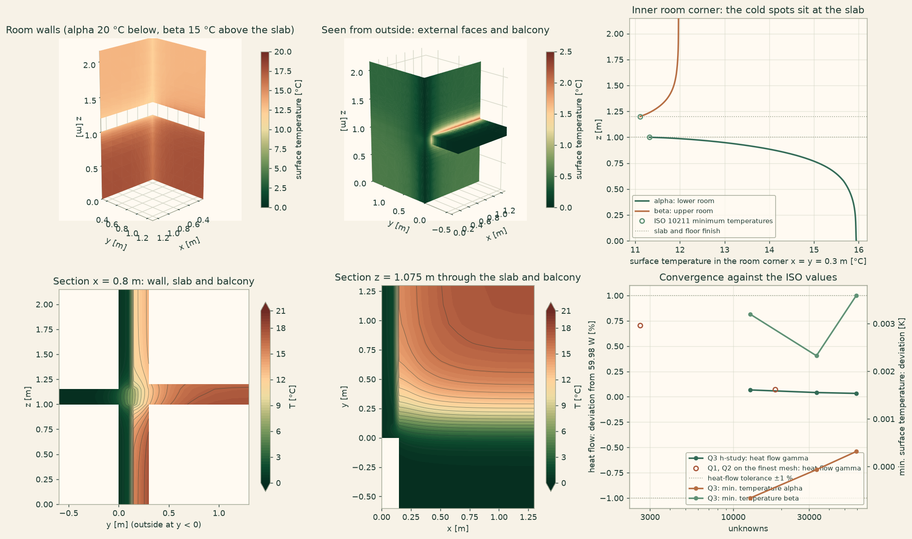
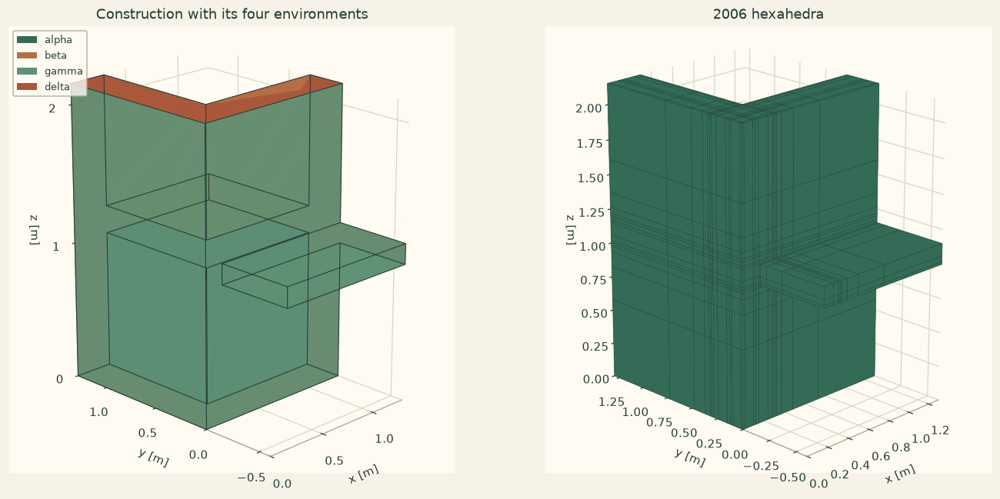

Docs › Examples › Floor slab and balcony thermal bridge (ISO 10211 case 3)
Heat transfer · 3D
Floor slab and balcony thermal bridge (ISO 10211 case 3)
An external corner where the floor slab runs through the wall into a balcony: the 3D validation case of the building standard, between two rooms and outside air.
Run locally with OneSimulation. The example downloads are free. Running them requires an activated runtime. Runtime Alpha 0.2.1a7 · CPython 3.13 on macOS (Apple Silicon), Ubuntu 22.04 (x86-64), and Windows x64. Installation and activation · View pilot plans. Scope of the reference checks.


What it computes
OneSimulation solves steady 3D conduction with surface resistances on a hexahedral block mesh aligned with every material layer, using cubic 64-node elements, and obtains the thermal coupling coefficients from a second unit-load solve; linear and quadratic elements are compared on the finest mesh. The geometry is read from a STEP file with named faces; the script that builds it comes with the notebook.
What it checks
All heat flows, coupling coefficients, minimum surface temperatures and weighting factors meet the standard's tolerances by a wide margin (heat flows within 0.08 %, temperatures within 0.004 K), and the energy balance closes to 1e-12.
Geometry
The notebook starts at the import of the CAD files thermal_bridges_iso10211_cases.step, thermal_bridges_iso10211_cases_brick.step, thermal_bridges_iso10211_cases_finish.step, thermal_bridges_iso10211_cases_insulation.step, thermal_bridges_iso10211_cases_slab.step: STEP (AP242), readable by any CAD program, with the names of the faces that the boundary conditions use. Put them next to the notebook.


The geometry script
The script thermal_bridges_iso10211_cases_geometry.py builds the geometry with the CAD objects of OneSimulation and writes the files. Change a dimension there, run it, and run the notebook again.
"""Geometry of the OneSimulation example "Floor slab and balcony thermal bridge" (EN ISO 10211 case 3).
Builds the external corner of a building with the CAD objects of OneSimulation: the two wall legs,
the floor slab that runs through the wall into a balcony, and the floor finish. The construction is
written to thermal_bridges_iso10211_cases.step with the face groups alpha (lower room), beta (upper
room), gamma (outside) and delta (cut planes). Four more files hold the regions of the materials
that differ from the interior leaf: thermal_bridges_iso10211_cases_slab.step, ..._finish.step,
..._brick.step and ..._insulation.step.
"""
from onesim.cad.d3 import Box, UnionFromObjects
end, balcony, top, soffit = 1.3, -0.6, 2.15, 1.0
def wall_legs(inner, outer):
"""The two legs of the corner between the distances inner and outer from the outside faces."""
return UnionFromObjects(
objects=[
Box(
length=outer - inner,
width=end - inner,
height=top,
origin=(inner, inner, 0.0),
),
Box(
length=end - outer,
width=outer - inner,
height=top,
origin=(outer, inner, 0.0),
),
]
)
def environment(face):
"""Environment of a face: alpha lower room, beta upper room, gamma outside, delta cut plane."""
x, y, z = face.center
if min(abs(z), abs(z - top), abs(x - end), abs(y - end)) < 1e-9:
return "delta"
if abs(x) < 1e-9 or abs(y) < 1e-9 or y < 0:
return "gamma"
return "alpha" if z <= soffit + 1e-9 else "beta"
slab = Box(
length=end - 0.15, width=end - balcony, height=0.15, origin=(0.15, balcony, soffit)
)
finish = Box(length=end - 0.3, width=end - 0.3, height=0.05, origin=(0.3, 0.3, 1.15))
construction = UnionFromObjects(objects=[wall_legs(0.0, 0.3), slab, finish])
construction = construction.grouped(
**{
name: construction.select(faces=lambda face: environment(face) == name)
for name in ("alpha", "beta", "gamma", "delta")
}
)
construction.save("thermal_bridges_iso10211_cases.step")
regions = {
"slab": slab,
"finish": finish,
"brick": wall_legs(0.0, 0.10),
"insulation": wall_legs(0.10, 0.15),
}
for name, region in regions.items():
region.save(f"thermal_bridges_iso10211_cases_{name}.step")The notebook
The complete notebook, cell by cell. Run it to produce the figures and the comparison printout.
EN ISO 10211 (Thermal bridges in building construction - Heat flows and surface temperatures - Detailed calculations) validates numerical methods with four test reference cases; a program that reproduces all of them is classed as a three-dimensional steady-state high-precision method. Cases 1 and 2 are two-dimensional, cases 3 and 4 three-dimensional. This notebook computes case 3, a three-dimensional external corner of a building between two floors:
- two external walls meet at a corner; each wall consists of an exterior leaf (brick), an insulation layer and an interior leaf (aerated concrete);
- the concrete floor slab between the lower and the upper room cuts through the interior leaf and the insulation of one wall, crosses the brick leaf and continues outside as a balcony, 0.6 m deep - the classical slab-edge thermal bridge;
- a thin floor finish lies on the slab in the upper room.
Coordinates (m): the outer corner of the building is the origin, the external faces are \(x=0\) and \(y=0\), the balcony sticks out to \(y<0\), \(z\) is vertical. The model ends at the cut planes \(x=1.3\), \(y=1.3\), \(z=0\) and \(z=2.15\).
| no. | part | extent / m | \(\lambda\) / (W/(m K)) |
|---|---|---|---|
| 3 | exterior leaf (brick) | wall region with \(x<0.10\) or \(y<0.10\) | 1.0 |
| 2 | insulation | wall region with \(0.10\le\min(x,y)<0.15\) | 0.04 |
| 1 | interior leaf (aerated concrete) | wall region with \(0.15\le\min(x,y)<0.30\) | 0.7 |
| 4 | floor slab and balcony (concrete) | \(0.15\le x\le1.3,\ -0.6\le y\le1.3,\ 1.0\le z\le1.15\) | 2.5 |
| 5 | floor finish | \(0.3\le x\le1.3,\ 0.3\le y\le1.3,\ 1.15\le z\le1.2\) | 1.0 |
The wall region is \(\{0\le x\le 1.3,\ 0\le y\le 1.3,\ \min(x,y)<0.3,\ 0\le z\le 2.15\}\); the slab replaces the wall materials where they overlap. The temperature solves \(\nabla\cdot(\lambda\nabla T)=0\) with surface resistances \(R_s\) (Robin condition \(-\lambda\,\partial_nT=(T-\theta)/R_s\)) towards three environments. Boundary conditions on every face:
| face | environment | condition |
|---|---|---|
| \(\alpha\): lower room - inner wall faces \(x=0.3\) / \(y=0.3\) below the slab and the slab soffit \(z=1.0\) | lower room, \(\theta_\alpha=20\) °C | \(R_{s}=0.20\) m² K/W (\(h=5\) W/(m² K)) |
| \(\beta\): upper room - inner wall faces above the floor and the floor surface \(z=1.2\) | upper room, \(\theta_\beta=15\) °C | \(R_{s}=0.20\) m² K/W (\(h=5\) W/(m² K)) |
| \(\gamma\): outside - external wall faces \(x=0\), \(y=0\) and all faces of the balcony | outside, \(\theta_\gamma=0\) °C | \(R_{s}=0.05\) m² K/W (\(h=20\) W/(m² K)) |
| \(\delta\): the cut planes \(x=1.3\), \(y=1.3\), \(z=0\), \(z=2.15\) | - | adiabatic (zero flux) |
The field is genuinely three-dimensional: it depends on the depth into each wall, on the distance from the corner and on the height relative to the slab.
The construction comes from the CAD file thermal_bridges_iso10211_cases.step, whose face groups alpha, beta, gamma and delta are the four environments. The files thermal_bridges_iso10211_cases_slab.step, ..._finish.step, ..._brick.step and ..._insulation.step hold the regions of the materials. The script thermal_bridges_iso10211_cases_geometry.py builds all of them with the CAD objects of OneSimulation.
Method. Finite elements on one hexahedral mesh that follows every material interface. The same mesh is solved with linear (Q1), quadratic (Q2) and cubic (Q3) elements.
Reference. EN ISO 10211, case 3: heat flows \(\Phi_\alpha=46.09\) W, \(\Phi_\beta=13.89\) W, \(\Phi_\gamma=59.98\) W and minimum surface temperatures \(\theta_{\min,\alpha}=11.32\) °C, \(\theta_{\min,\beta}=11.11\) °C. The standard accepts heat flows within 1 % and temperatures within 0.1 K.
from dataclasses import replace
import numpy as np
from onesim.cad.d2 import Plane
from onesim.cad.d3 import Box
from onesim.cad.exchange import load
from onesim.materials import IsotropicSolid
from onesim.meshing import Geometric, Piecewise, StructuredHexahedralMesher, region_mesh
from onesim.numerics import Numerics
from onesim.numerics.fem import FiniteElement, Lagrange
from onesim.numerics.linear import SparseDirect
from onesim.physics.heat_transfer import ConvectiveHeatFlux, HeatConduction, HeatFlux
from onesim.simulation import Problem, Simulation, regionwise
from onesim.visualization import plots, theme
theme.set()Geometry
load returns the construction with its named faces and the four material regions. The positions of the material interfaces are read from the regions.
building = load("thermal_bridges_iso10211_cases.step")
slab, finish, brick, insulation = (
load(f"thermal_bridges_iso10211_cases_{name}.step")
for name in ("slab", "finish", "brick", "insulation")
)
faces = building.boundaries
(_, balcony, _), (end, _, top) = building.bounding_box
leaf, core, room = (
insulation.bounding_box[0][0],
slab.bounding_box[0][0],
finish.bounding_box[0][0],
)
soffit, deck, floor = (
slab.bounding_box[0][2],
finish.bounding_box[0][2],
finish.bounding_box[1][2],
)Mesh
A block mesh with a node plane on every material interface; the cells are 20 mm wide next to the interfaces and grow away from them. region_mesh keeps the cells inside the construction.
fine = 0.02
across_wall = (
(leaf, Geometric(2, first=fine)),
(core - leaf, Geometric(2, first=fine)),
(room - core, Geometric(3, first=fine, toward="end")),
(end - room, Geometric(5, first=fine)),
)
grading = (
Piecewise(across_wall),
Piecewise(((-balcony, Geometric(4, first=fine, toward="end")),) + across_wall),
Piecewise(
(
(soffit, Geometric(5, first=fine, toward="end")),
(deck - soffit, Geometric(3, first=fine)),
(floor - deck, Geometric(2, first=fine)),
(top - floor, Geometric(5, first=fine)),
)
),
)
hull = Box(length=end, width=end - balcony, height=top, origin=building.bounding_box[0])
mesh = region_mesh(
StructuredHexahedralMesher(
cells=tuple(g.cells for g in grading), grading=grading
).generate(hull),
building,
)
view = plots.Camera(elevation=20, azimuth=225)
fig = plots.figure(1, 2, size=(15, 7))
plots.geometry(
building,
selection={
name: getattr(faces, name) for name in ("alpha", "beta", "gamma", "delta")
},
labels=False,
camera=view,
title="Construction with its four environments",
ax=fig[0],
)
plots.mesh(
mesh,
groups=("all",),
legend=False,
camera=view,
title=f"{mesh.cell_count} hexahedra",
ax=fig[1],
)
plots.show()Materials and boundary conditions
The conductivity is given region by region (the first match wins); the interior leaf is the default. Each room and the outside exchange heat through a surface resistance.
conductivity = regionwise(
((slab, 2.5), (finish, 1.0), (brick, 1.0), (insulation, 0.04)),
default=0.7,
unit="W/m/K",
)
material = replace(
IsotropicSolid(
density=1500.0,
specific_heat_capacity=1000.0,
thermal_conductivity=1.0,
youngs_modulus=1e9,
poisson_ratio=0.3,
thermal_expansion_coefficient=0.0,
),
thermal_conductivity=conductivity,
)
model = HeatConduction(domain=building.volume, material=material, heating=0.0)
air = {"alpha": (20.0, 1 / 0.20), "beta": (15.0, 1 / 0.20), "gamma": (0.0, 1 / 0.05)}
problem = Problem(
name="ISO 10211 case 3",
geometry=building,
physics=(model,),
boundary_conditions=tuple(
ConvectiveHeatFlux(
boundary=getattr(faces, name),
physics=model,
heat_transfer_coefficient=h,
ambient_temperature=273.15 + T,
)
for name, (T, h) in air.items()
)
+ (HeatFlux(boundary=faces.delta, physics=model, value=0.0),),
)Solve
One steady solve per element order on the same mesh.
def solve(order):
"""Temperature field for Lagrange elements of the given order."""
numerics = Numerics(
spatial=FiniteElement(element=Lagrange(order=order)),
linear_solver=SparseDirect(),
)
return (
Simulation(problem=problem, mesh=mesh, numerics=numerics)
.solve_stationary()
.field(model.temperature)
)
fields = {order: solve(order) for order in (1, 2, 3)}
field = fields[3]Results
Heat flows into the construction and the lowest surface temperature of each room, against the values of the standard.
reference = {
"heat flow alpha [W]": 46.09,
"heat flow beta [W]": 13.89,
"heat flow gamma [W]": 59.98,
"min. temperature alpha [°C]": 11.32,
"min. temperature beta [°C]": 11.11,
}
results = {
order: [
-f.boundary_flux(faces.alpha),
-f.boundary_flux(faces.beta),
f.boundary_flux(faces.gamma),
f.sample(along=faces.alpha, subdivisions=6).values.min() - 273.15,
f.sample(along=faces.beta, subdivisions=6).values.min() - 273.15,
]
for order, f in fields.items()
}
print(
f"{'quantity':30s} {'ISO 10211':>10s} {'Q1':>10s} {'Q2':>10s} {'Q3':>10s} deviation of Q3"
)
for row, (name, value) in enumerate(reference.items()):
q3 = results[3][row]
deviation = (
f"{100 * (q3 / value - 1):+.3f} % (1 % allowed)"
if "flow" in name
else f"{q3 - value:+.4f} K (0.1 K allowed)"
)
print(
f"{name:30s} {value:10.2f} "
+ " ".join(f"{results[order][row]:10.4f}" for order in fields)
+ " "
+ deviation
)
print(
f"energy balance (Q3): in {results[3][0] + results[3][1]:.5f} W, out {results[3][2]:.5f} W"
)Figure
The room walls and the outside with the balcony, two sections through the slab, the temperature along the inner room corner, and the deviation of the heat flows from the standard.
celsius = lambda T, position: T - 273.15
z = np.linspace(0, top, 431)
corner = (
field.evaluate(
np.column_stack((np.full_like(z, room), np.full_like(z, room), z))
).ravel()
- 273.15
)
rooms = {"lower room": z <= soffit, "upper room": z >= floor}
deviation = {
name[:-4]: [100 * (results[order][row] / value - 1) for order in fields]
for row, (name, value) in enumerate(reference.items())
if "flow" in name
}
fig = plots.figure(2, 3, size=(18, 11))
plots.surface(
field,
boundary=faces.alpha | faces.beta,
component=celsius,
limits=(0, 20),
subdivisions=3,
camera=plots.Camera(elevation=20, azimuth=45),
label="surface temperature [°C]",
title="Room side: 20 °C below, 15 °C above the slab",
ax=fig[0],
)
plots.surface(
field,
boundary=faces.gamma,
component=celsius,
limits=(0, 2.5),
subdivisions=3,
camera=view,
label="surface temperature [°C]",
title="Outside with the balcony",
ax=fig[1],
)
plots.line(
y={label: (corner[part], z[part]) for label, part in rooms.items()},
points={"ISO 10211 minimum": ([11.32, 11.11], [soffit, floor])},
ylimits=(0, top),
xlabel="temperature in the room corner x = y = 0.3 m [°C]",
ylabel="z [m]",
title="The cold spots sit at the slab",
legend="lower left",
ax=fig[2],
)
plots.section(
field,
plane=Plane(origin=(0.8, 0, 0), normal=(1, 0, 0)),
component=celsius,
limits=(0, 20),
contours=19,
subdivisions=3,
label="T [°C]",
title="Section x = 0.8 m: wall, slab and balcony",
xlabel="y [m] (outside at y < 0)",
ylabel="z [m]",
ax=fig[3],
)
plots.section(
field,
plane=Plane(origin=(0, 0, 1.075), normal=(0, 0, 1)),
component=celsius,
limits=(0, 20),
contours=19,
subdivisions=3,
label="T [°C]",
title="Section z = 1.075 m through the slab",
ax=fig[4],
)
plots.line(
[1, 2, 3],
deviation,
hlines={"tolerance of the standard": 1.0},
markers=True,
xlabel="element order",
ylabel="deviation from ISO 10211 [%]",
title="Heat flows against the standard",
ax=fig[5],
)
plots.show()Going further
Put a thermal break into the slab inside the brick leaf (a 60 mm element with \(\lambda=0.15\) W/(m K), one more region file from thermal_bridges_iso10211_cases_geometry.py) and watch the minimum surface temperature rise, or refine the mesh by lowering fine.